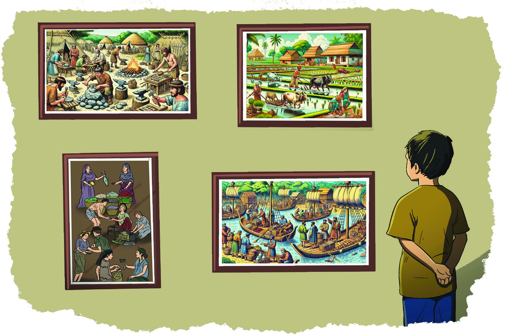
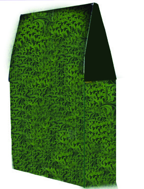
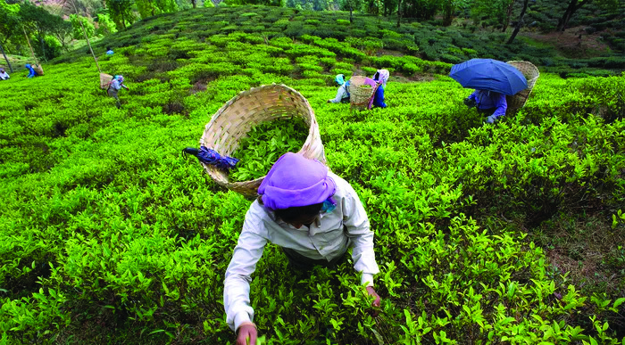
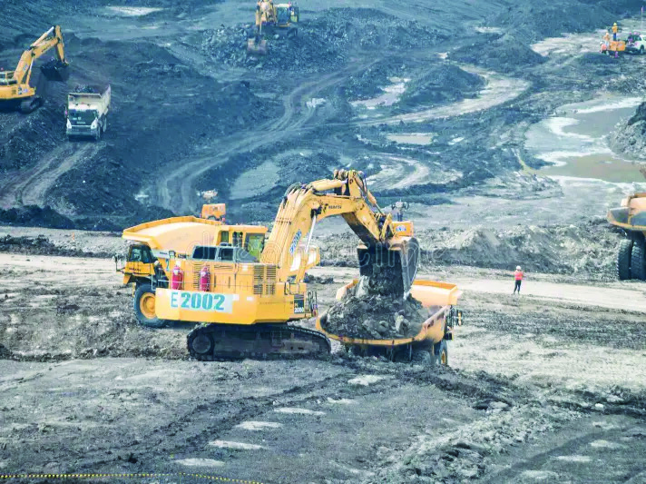
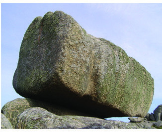
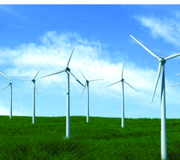
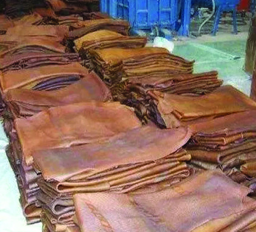
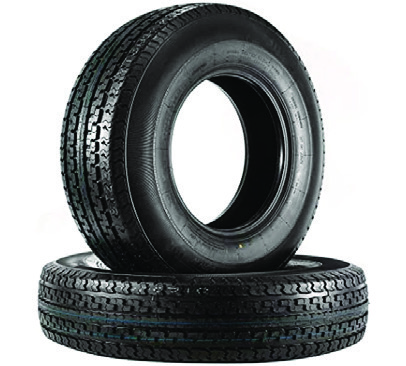

<!DOCTYPE html>
<html lang="ml">
<head>
  <meta charset="utf-8">
  <meta name="viewport" content="width=device-width, initial-scale=1.0">
  <title>Chapter 6 - Class 6 Social science</title>
  <style>

:root {
  --bg-color: #fcfcfd;
  --card-bg: #ffffff;
  --text-color: #1e293b;
  --text-muted: #64748b;
  --primary-color: #0284c7;
  --primary-light: #e0f2fe;
  --border-color: #e2e8f0;
  --radius: 10px;
  --shadow: 0 4px 6px -1px rgb(0 0 0 / 0.05), 0 2px 4px -2px rgb(0 0 0 / 0.05);
}

body {
  font-family: -apple-system, BlinkMacSystemFont, "Segoe UI", Roboto, "Noto Sans Malayalam", "Manjari", "Gayathri", sans-serif;
  background-color: var(--bg-color);
  color: var(--text-color);
  line-height: 1.8;
  font-size: 1.1rem;
  margin: 0;
  padding: 0;
}

.container {
  max-width: 860px;
  margin: 0 auto;
  padding: 2.5rem 1.5rem 5rem 1.5rem;
}

header {
  margin-bottom: 2.5rem;
  padding-bottom: 1.5rem;
  border-bottom: 2px solid var(--border-color);
}

.badge-row {
  display: flex;
  gap: 0.5rem;
  margin-bottom: 0.75rem;
  flex-wrap: wrap;
}

.badge {
  display: inline-block;
  font-size: 0.75rem;
  font-weight: 700;
  text-transform: uppercase;
  letter-spacing: 0.05em;
  padding: 0.25rem 0.65rem;
  border-radius: 9999px;
  background: var(--primary-light);
  color: var(--primary-color);
}

.badge-medium {
  background: #fef3c7;
  color: #b45309;
}

.badge-class {
  background: #dcfce7;
  color: #15803d;
}

h1 {
  font-size: 2.1rem;
  font-weight: 800;
  margin: 0.5rem 0 1rem 0;
  line-height: 1.3;
  color: #0f172a;
}

.nav-bar {
  display: flex;
  justify-content: space-between;
  margin: 1.5rem 0;
  font-size: 0.95rem;
  flex-wrap: wrap;
  gap: 0.5rem;
}

.nav-bar a {
  color: var(--primary-color);
  text-decoration: none;
  font-weight: 600;
  padding: 0.5rem 1rem;
  border-radius: var(--radius);
  background: var(--card-bg);
  border: 1px solid var(--border-color);
  transition: all 0.2s ease;
}

.nav-bar a:hover {
  background: var(--primary-light);
  border-color: var(--primary-color);
}

.nav-bar .disabled {
  color: var(--text-muted);
  pointer-events: none;
  border-color: transparent;
  background: transparent;
}

.page-section {
  background: var(--card-bg);
  border: 1px solid var(--border-color);
  border-radius: var(--radius);
  box-shadow: var(--shadow);
  padding: 2rem;
  margin-bottom: 2.5rem;
}

.page-header {
  display: flex;
  align-items: center;
  justify-content: space-between;
  margin-bottom: 1.25rem;
  padding-bottom: 0.5rem;
  border-bottom: 1px dashed var(--border-color);
}

.page-number {
  font-size: 0.8rem;
  font-weight: 700;
  text-transform: uppercase;
  color: var(--text-muted);
  letter-spacing: 0.05em;
}

.page-content p {
  margin: 0 0 1.25rem 0;
  white-space: pre-wrap;
  word-break: break-word;
}

.page-content p:last-child {
  margin-bottom: 0;
}

.diagram-card {
  margin: 2rem 0;
  text-align: center;
  background: #f8fafc;
  border: 1px solid var(--border-color);
  border-radius: var(--radius);
  padding: 1rem;
  overflow: hidden;
}

.diagram-card img {
  max-width: 100%;
  height: auto;
  border-radius: calc(var(--radius) - 4px);
  display: inline-block;
  box-shadow: 0 2px 4px rgba(0,0,0,0.04);
}

.diagram-card figcaption {
  font-size: 0.85rem;
  color: var(--text-muted);
  margin-top: 0.75rem;
  font-weight: 500;
}

footer {
  margin-top: 3rem;
  padding-top: 2rem;
  border-top: 2px solid var(--border-color);
}

  </style>
</head>
<body>
  <div class="container">
    <header>
      <div class="badge-row">
        <span class="badge badge-class">Class 6</span>
        <span class="badge badge-medium">Malayalam Medium</span>
        <span class="badge">Social science</span>
        <span class="badge">Part 1</span>
      </div>
      <h1>Chapter 6</h1>
      <div class="nav-bar"><a href="part_1_chapter_5.html">← Chapter 5</a><a href="index.html">☰ Index</a><a href="part_1_chapter_7.html">Chapter 7 →</a></div>
    </header>
    <main>
<section class="page-section" id="page-75">
  <div class="page-header"><span class="page-number">Page 75</span></div>
  <figure class="diagram-card" id="fig_ch06_p075_01"><figcaption>Figure fig_ch06_p075_01 (Page 75)</figcaption></figure>
  <figure class="diagram-card" id="fig_ch06_p075_02"><figcaption>Figure fig_ch06_p075_02 (Page 75)</figcaption></figure>
  <div class="page-content">
    <p>സാാമൂൂഹ്യയശാാസ്ത്രംം ക്ലാാസ് <br>സാാമൂൂഹ്യയശാാസ്ത്രംം ക്ലാാസ് VI<br>VI<br>75<br>         <br>         <br>മനുുഷ്യയർ തങ്ങളുുടെെ ചുുറ്റുുപാാടിനെ� രൂൂപപ്പെെƀടുത്തിി കൃഷി ആരംഭിിച്ചതിനെ�ക്കുുറിിച്ചാണ്് വൈൈലോോ<br>പ്പിള്ളിി ഈ കവിതയിിലൂടെെ അവതരിപ്പിക്കുുന്നത്.<br>കൃഷിയുടെെ ആരംഭത്തെ�ക്കുുറിിച്ചുംം� ഭക്ഷ്യയശേ”ഖരണ<br>ത്തിിൽ നിന്നുംം� ഭക്ഷ്യോ�ോ�ൽപാാദനത്തിിലേക്കുുള്ള <br>മാറ്റത്തെ�<br>ക്കുുറിിച്ചുംം� മുൻ ക്ലാാസിിൽ ചർച്ച ചെ�യ്തിിട്ടുുണ്ടല്ലോോƽോ.<br>ഭൂമി, മനുുഷ്യാാ�ധ്വാാ�നംം എന്നീ ഘടകങ്ങളാണ്് ആദ്യകാലത്ത്് കാർഷികോ�ോൽപ്പാദനത്തിിനായിി <br>മനുുഷ്യയർ പ്രയോ�ോജനപ്പെെƀടുത്തിിയിിരുന്നത്. ഉൽപാാദനം വർധിപ്പിക്കുുന്നതിനുംം� ഭൂമി കൃഷിയോ�ോഗ്യയ<br>മാക്കുുന്നതിനുംം� അക്കാലത്ത്് കൂടുതൽ അധ്വാാ�നംം വേ�ണ്ടിവന്നിരുന്നു. കാലക്രമേ�ണ ഇരുമ്പിിൽ <br>നിർമ്മിിച്ച മൂർച്ചയുളളതുംം� ഉറപ്പുള്ളതുുമായ ഉപകരണ<br>ങ്ങൾ ഉപയോ�ോഗപ്പെെƀടുത്തിി കൂടുതൽ ഭൂപ്ര<br>ദേ�ശങ്ങൾ കൃഷിയോ�ോഗ്യയമാക്കി. ഇത് ഭക്ഷ്യോ�ോ�ൽപാാദനം വർധിപ്പിക്കാൻ സഹാായിിച്ചു.  <br>കൃഷി വ്യാാ�പിക്കുുന്നതിന് ഇടയാാക്കിയ സാഹചര്യയങ്ങൾ എന്തെെŦല്ലാമായിിരിക്കുംം�? ചർച്ച ചെ�യ്യൂൂ.<br>വ്യാDzാപാാരത്തിിന്റെź തുുടക്കംം<br>സ്കൂൂളിലെെ സാമൂഹ്യശാസ്ത്ര ലാബിിൽ പ്രദർശിപ്പിച്ചിട്ടുുളള, മനുുഷ്യയപുരോ�ോഗതിിയുമായിി ബന്ധപ്പെെƀട്ട <br>ചിത്രങ്ങൾ നിരീക്ഷിക്കുുകയാണ്് നിഷാൻ.<br>പണ്ട്് പിതാാമഹർ കാാട്ടിിൻ നടുുവിിൽ<br>പണ്ട്് പിതാാമഹർ കാാട്ടിിൻ നടുുവിിൽ<br>ചിിന്തകളുുരസിിടുുമക്കാാലംം<br>ചിിന്തകളുുരസിിടുുമക്കാാലംം<br>വന്നുു പിറന്നിതു ചെ�ന്നിിണമോ�ോലുംം�<br>വന്നുു പിറന്നിതു ചെ�ന്നിിണമോ�ോലുംം�<br>വാളുു കണക്കൊ�ൊരുു തീനാളം!<br>വാളുു കണക്കൊ�ൊരുു തീനാളം!<br>........................................................................<br>........................................................................<br>കാാടും�ം പടലുംം� വെ�ണ്ണീീറാക്കി-<br>കാാടും�ം പടലുംം� വെ�ണ്ണീീറാക്കി-<br>ക്കനകക്കതിിരിനു വളമേ�കി<br>ി<br>ക്കനകക്കതിിരിനു വളമേ�കി<br>ി<br>കഠിിനമിരുമ്പുു കുഴമ്പാക്കി, പല<br>കഠിിനമിരുമ്പുു കുഴമ്പാക്കി, പല<br>കരുുനിര വാർത്തുു പണിക്കേ�കിി!<br>കരുുനിര വാർത്തുു പണിക്കേ�കിി!<br>	<br>   <br>                    <br>                                  <br>                     <br>കൃഷിിയിിൽ നിിന്ന്് വ്യയവ<br>സാായത്തിിലേക്ക്<br>കൃഷിിയിിൽ നിിന്ന്് വ്യയവ<br>സാായത്തിിലേക്ക്<br>6<br>അവലംബം - &#x27;പന്തങ്ങൾ&#x27;  വൈൈലോോപ്പിള്ളിി ശ്രീീധരമേ�നോ�ോ<br>ൻ</p>
  </div>
</section>
<section class="page-section" id="page-76">
  <div class="page-header"><span class="page-number">Page 76</span></div>
  <figure class="diagram-card" id="fig_ch06_p076_01"><figcaption>Figure fig_ch06_p076_01 (Page 76)</figcaption></figure>
  <figure class="diagram-card" id="fig_ch06_p076_02"><figcaption>Figure fig_ch06_p076_02 (Page 76)</figcaption></figure>
  <figure class="diagram-card" id="fig_ch06_p076_03"><figcaption>Figure fig_ch06_p076_03 (Page 76)</figcaption></figure>
  <div class="page-content">
    <p>സാാമൂൂഹ്യയശാാസ്ത്രംം ക്ലാാസ് <br>സാാമൂൂഹ്യയശാാസ്ത്രംം ക്ലാാസ് VI<br>VI<br>76<br>ഭാാഗംം <br>ഭാാഗംം 1<br>കൃഷി വ്യാാ�പകമായതോ�ോ<br>ടെെ ഉൽപാാദനം വർധിക്കുുകയുംം� അത് മിച്ചോ�ോൽപാാദനത്തിിന് വഴിി<br>തെ�ളിിക്കുുകയുംം� ചെ�യ്തുു. അധികംവന്ന ഭക്ഷ്യയവസ്തുുക്കൾ മനുുഷ്യയർ ഭാവിയിിലെെ ഉപയോ�ോഗ<br>ത്തിി<br>നായിി സൂക്ഷിച്ചുവച്ചു. കാലക്രമേ�ണ ഭക്ഷ്യയവസ്തുുക്കൾ സംഭരിിക്കുുക മാത്രമല്ല, ആവശ്യക്കാർക്ക് <br>കൈൈമാറുകയുംം� ചെ�യ്തിിരുന്നു.  <br>സാധനങ്ങൾക്ക് പകരം സാധനങ്ങൾ പരസ്പരം കൈൈമാറിിയിിരുന്ന സമ്പ്രദായം ഏത് പേ�രിിലാണ്് <br>അറിിയപ്പെെƀട്ടിരുന്നത്?<br>ആദ്യകാലത്ത്് പ്രാദേ�ശികമായിി മാത്രമാണ്് ഇത്തരംം <br>കൈൈമാറ്റം നിലനിിന്നിരുന്നത്. തുടർന്ന് ദേ�ശങ്ങൾ കടന്നുംം� <br>ഈ കൈൈമാറ്റം വ്യാാ�പിച്ചു.<br>ക്രമേ�ണ സാധനകൈൈമാ<br>ാറ്റത്തിിനായിി ചെ�മ്പിിലുംം� വെ�ള്ളിി<br>യിിലുംം� സ്വവർണ്ണത്തിിലുംം� നിർമ്മിിച്ച നാണയങ്ങൾ വിനിമയ <br>മാധ്യമമായിി ഉപയോ�ോഗി<br>ിച്ചു തുടങ്ങി. കരകൗൗശല വസ്തുു<br>ക്കൾ, തുണിത്തരങ്ങൾ, സുഗന്ധവ്യഞ്ജനങ്ങൾ എന്നിവ<br>ചിത്രനിരീക്ഷണ<br>ത്തിിലൂടെെ നിഷാൻ കണ്ടെ�ത്തിിയ ആശയങ്ങളെ� അവയുുടെെ കാലക്ര<br>ചിത്രനിരീക്ഷണ<br>ത്തിിലൂടെെ നിഷാൻ കണ്ടെ�ത്തിിയ ആശയങ്ങളെ� അവയുുടെെ കാലക്ര<br>മത്തിിനനുുസരിിച്ച് പട്ടികപ്പെെƀടുത്തൂ.<br>മത്തിിനനുുസരിിച്ച് പട്ടികപ്പെെƀടുത്തൂ.<br>• <br>• 	<br>• <br>• 	<br>	<br>	<br>	<br>ആയുധങ്ങളുുടെെയുംം� ഉപകരണങ്ങ<br>ളുുടെെയുംം� നിിർമ്മാാണം<br>കൃഷിിയുടെെ വ്യാDzാപനംം<br>സാാധനങ്ങളുുടെെ വിപണനം<br>സാധനങ്ങളുുടെെ <br>കൈൈമാറ്റം<br>വ്യാDzാപാാരം<br>വ്യാDzാപാാരം<br>പ്രതിഫലം ഈടാക്കി സാ<br>പ്രതിഫലം ഈടാക്കി സാ<br>ധനങ്ങളോ�ോ സേ�വനങ്ങളോ�ോ <br>ധനങ്ങളോ�ോ സേ�വനങ്ങളോ�ോ <br>കൈൈമാറ്റം ചെ�യ്യുുന്ന പ്രക്രിയ<br>കൈൈമാറ്റം ചെ�യ്യുുന്ന പ്രക്രിയ<br>യാണ്് വ്യാാ�പാാരം.<br>യാണ്് വ്യാാ�പാാരം.<br>ചിിത്രംം 6.1<br>ചിിത്രംം 6.1</p>
  </div>
</section>
<section class="page-section" id="page-77">
  <div class="page-header"><span class="page-number">Page 77</span></div>
  <figure class="diagram-card" id="fig_ch06_p077_01"><figcaption>Figure fig_ch06_p077_01 (Page 77)</figcaption></figure>
  <figure class="diagram-card" id="fig_ch06_p077_02"><figcaption>Figure fig_ch06_p077_02 (Page 77)</figcaption></figure>
  <div class="page-content">
    <p>സാാമൂൂഹ്യയശാാസ്ത്രംം ക്ലാാസ് <br>സാാമൂൂഹ്യയശാാസ്ത്രംം ക്ലാാസ് VI<br>VI<br>77<br>കൃഷിിയിിൽനിിന്ന്് വ്യയവസാായത്തിിലേക്ക്്<br>കൃഷിിയിിൽനിിന്ന്് വ്യയവസാായത്തിിലേക്ക്്<br>         <br>         <br>യാായിരുന്നു ആഭ്യയന്തരവ്യാാšപാാരത്തിിലെെ പ്രധാാന<br> വസ്തുുക്കൾ. സാാധനങ്ങളുടെെ കൈൈമാാറ്റംം പിൽക്കാാ<br>ലത്ത്് വിദൂരദേ�ശ<br>ങ്ങൾ തമ്മിിലുംം� ആരംഭിച്ചു. വിദേ�ശവ്യാാšപാാരം പുതിയ വ്യാാšപാാരപാാതകൾ രൂപ<br>പ്പെെƀടുന്നതിന് വഴിിയൊ�ൊരുുക്കി. ഏഷ്യയ ഭൂഖണ്ഡത്തിിലെെ കിഴക്കുംം� പടിഞ്ഞാാറും�ം തമ്മിിലുംം� ഏഷ്യയ, <br>യൂറോ�ോപ്പ്, ആഫ്രിിക്ക എന്നിവ തമ്മിിലുമുളള വാാണി<br>ിജ്യയബന്ധം നിലനിിർത്തിിയിരുന്ന പട്ടുപാാത <br>(Silk Route) ഇതിന് ഉദാാഹരണമാാണ്.<br>സാാമ്പത്തിിക പ്രവർത്തനങ്ങൾ<br>കൃഷിിയിൽ നിന്നുംം� വ്യാാšപാാരത്തിിലേക്കുുളള വളർച്ച നമ്മൾ ചർച്ച ചെെxയ്തല്ലോ�ോ<br>. കൃഷിിയുംം� വ്യാാšപാാര<br>വുമാായി ബന്ധപ്പെെƀട്ട് നടന്ന പ്രവർത്തനങ്ങൾ പിൽക്കാാലത്ത് വരുുമാാനംം ലക്ഷ്യംം� വച്ചുുളളവയാായി<br>ി <br>മാാറിി.<br>കൃഷിിയുുടെെ <br>കൃഷിിയുുടെെ <br>വ്യാDzാപനംം<br>വ്യാDzാപനംം<br>ഉല്പന്ന <br>ഉല്പന്ന <br>സംംഭരണംം<br>സംംഭരണംം<br>മിിച്ചോăോൽ<br>മിിച്ചോăോൽ<br>പാദനംം<br>പാദനംം<br>ഉല്പന്ന <br>ഉല്പന്ന <br>ക്കൈൈമാറ്റംം<br>ക്കൈൈമാറ്റംം<br>ചന്തകൾ/ <br>ചന്തകൾ/ <br>അങ്ങാടികൾ<br>അങ്ങാടികൾ<br>കച്ചവടകേ�ന്ദ്ര<br>കച്ചവടകേ�ന്ദ്ര<br>ങ്ങൾ/ നഗര<br>ങ്ങൾ/ നഗര<br>ങ്ങൾ<br>ങ്ങൾ<br>ചന്ദ്രഗുപ്ത മൗ�ര്യയന്റെെź മന്ത്രിിയാായിരുന്ന കൗടില്യയന്റെെź വാാക്കുുകൾ ശ്രദ്ധിിച്ചല്ലോ�ോ. ഏതൊ‚ൊരുു സമൂൂ<br>ഹത്തിിന്റെെźയുംം� പുരോ�ോഗതി നിർണ്ണയിക്കുുന്നത് സാാമ്പത്തിിക പ്രവർത്തനങ്ങളാാണെ�ന്നാാണ് <br>കൗടില്യയൻ സൂൂചിപ്പിക്കുുന്നത്.<br>എന്താാണ്<br>് സാാമ്പത്തിിക പ്രവർത്തനങ്ങൾ?<br>&quot;അഭിവൃദ്ധിിയുടെെ മൂലകാാരണം സാാമ്പത്തിിക പ്രവർത്തനങ്ങളാാണ്, അതിന്റെെź <br>&quot;അഭിവൃദ്ധിിയുടെെ മൂലകാാരണം സാാമ്പത്തിിക പ്രവർത്തനങ്ങളാാണ്, അതിന്റെെź <br>അഭാാവം ഗുരുതരമാായ ദുരിിതം കൊ�ൊണ്ടുവരുുന്നു. ഫലവത്താായ സാാമ്പത്തിിക <br>അഭാാവം ഗുരുതരമാായ ദുരിിതം കൊ�ൊണ്ടുവരുുന്നു. ഫലവത്താായ സാാമ്പത്തിിക <br>പ്രവർത്തനങ്ങളുടെെ അഭാാവം നിലവിിലെെ അഭിവൃദ്ധിിയേ�യുംം� ഭാാവിയിലെെ <br>പ്രവർത്തനങ്ങളുടെെ അഭാാവം നിലവിിലെെ അഭിവൃദ്ധിിയേ�യുംം� ഭാാവിയിലെെ <br>വളർച്ചയേ�യുംം� അപകടപ്പെെƀടുത്തുന്നു&quot;.<br>വളർച്ചയേ�യുംം� അപകടപ്പെെƀടുത്തുന്നു&quot;.<br>അർ‍‍ഥശാാസ്ത്രംം<br>അർ‍‍ഥശാാസ്ത്രംം<br>കൗടില്യയൻ<br>കൗടില്യയൻ<br>തന്നിരിിക്കുുന്ന ഫ്ലോോƌോചാാർട്ടിിന്റെെź സഹാായത്താാൽ കൃഷിിയുടെെ വ്യാാšപനംം മുതൽ നഗര<br>തന്നിരിിക്കുുന്ന ഫ്ലോോƌോചാാർട്ടിിന്റെെź സഹാായത്താാൽ കൃഷിിയുടെെ വ്യാാšപനംം മുതൽ നഗര<br>ങ്ങളുടെെ രൂപപ്പെെƀടൽ വരെെയു<br>ുളള ആശയങ്ങൾ ഉൾപ്പെെƀടുത്തിി കുറിപ്പ് തയ്യാാറാാക്കൂൂ.<br>ങ്ങളുടെെ രൂപപ്പെെƀടൽ വരെെയു<br>ുളള ആശയങ്ങൾ ഉൾപ്പെെƀടുത്തിി കുറിപ്പ് തയ്യാാറാാക്കൂൂ.<br>വരുുമാാനംം ലഭ്യയമാാകുന്ന പ്രവർത്തനങ്ങളാാണ് സാാമ്പത്തിിക പ്രവർത്തനങ്ങൾ.  സാാമ്പ<br>ത്തിിക  പ്രവർത്തനങ്ങൾ സാാധ്യയമാാകുന്നത് ഉൽപാാദനംം എന്ന പ്രക്രി<br>ിയയിലൂടെെയാാണ്.</p>
  </div>
</section>
<section class="page-section" id="page-78">
  <div class="page-header"><span class="page-number">Page 78</span></div>
  <figure class="diagram-card" id="fig_ch06_p078_01"><figcaption>Figure fig_ch06_p078_01 (Page 78)</figcaption></figure>
  <figure class="diagram-card" id="fig_ch06_p078_02"><figcaption>Figure fig_ch06_p078_02 (Page 78)</figcaption></figure>
  <figure class="diagram-card" id="fig_ch06_p078_03"><figcaption>Figure fig_ch06_p078_03 (Page 78)</figcaption></figure>
  <div class="page-content">
    <p>സാാമൂൂഹ്യയശാാസ്ത്രംം ക്ലാാസ് <br>സാാമൂൂഹ്യയശാാസ്ത്രംം ക്ലാാസ് VI<br>VI<br>78<br>ഭാാഗംം <br>ഭാാഗംം 1<br>ചിത്രങ്ങൾ നിരീക്ഷിക്കൂ<br>നമ്മുടെെ പ്രിയപ്പെെƀട്ട പാാനീയങ്ങളിലൊൊന്നാാണല്ലോƽോ ചാായ.<br>ചാായ ഉണ്ടാാക്കുന്നതിിന് തേ�യില ആവശ്യയമാാണ്്. തേ�യില എങ്ങനെ�യാാണ് നമ്മുടെെ വീടുകളിിൽ <br>എത്തുന്നത്്?<br>തേ�യിലച്ചെ�ടിികളിിൽ നിന്ന് ഇലകൾ നുള്ളിിയെ�ടുക്കുന്നുു. അവ ഫാാക്ടറിിയിൽ എത്തിിച്ച് <br>സംസ്കരിച്ച് തേ�യിലപ്പൊƀൊടിയാാക്കി മാാറ്റുുന്നുു. ഈ തേ�യിലപ്പൊƀൊടി കവറുുകളിിലാാക്കി വാാഹനങ്ങളിൽ <br>നമ്മുടെെ വീടിനു സമീീപത്തുളള കടകളിിലേേക്കെ�ത്തിിക്കുന്നുു. <br>തേ�യിലത്തോ�ോട്ടങ്ങളിൽ നിന്ന് തേ�യില നമ്മുടെെ കൈൈകളിിൽ എത്തുന്നതുുവരെെയു<br>ുളള സാാമ്പത്തിിക<br>പ്രവർത്തനങ്ങളാാണ് നമ്മൾ ചർച്ച ചെ�യ്തത്. ഇത്തരംം സാാമ്പത്തിിക പ്രവർത്തനങ്ങളെ� അവയുുടെെ <br>പൊ�ൊതുുസ്വഭാാവമനു<br>ുസരിിച്ച് മൂന്ന് മേ�ഖലകളിിലാായി തിരിക്കാം.<br>ചിത്രംം 6.2<br>ചിത്രംം 6.2<br>പ്രകൃതിവിഭവങ്ങൾ നേ�രിട്ട് <br>ഉപയോ�ോഗപ്പെെƀടുത്തിി നട<br>ത്തുന്ന  പ്രവർത്തനങ്ങൾ <br>ഉൾപ്പെെƀടുന്ന മേ�ഖലയാാണ് <br>പ്രാാഥമികമേ�ഖല. കൃഷിക്ക് <br>പ്രാാധാാന്യമുള്ളത്് കൊ�ൊണ്ട്് <br>ഈ മേ�ഖല കാാർഷികമേ�<br>ഖല എന്നുംം� അറിയപ്പെെƀ<br>ടുന്നുു. <br>ഉദാാ. കൃഷി, വനപരിിപാാല<br>നം, ഖനനം, മത്സ്യയബന്ധനംം <br>തുടങ്ങിയവ<br>പ്രാാഥമിക മേ�ഖലയിൽ <br>നിന്നുുള്ള അസംസ്കൃ തവ<br>സ്തുുക്കൾ ഉപയോ�ോഗിിച്ച് <br>പുതിയ ഉല്പന്നങ്ങൾ <br>ഉണ്ടാാക്കുന്ന പ്രവർത്ത<br>നങ്ങൾ നടക്കുന്ന മേ�ഖ<br>ലയാാണ് ദ്വിി�തീയമേ�ഖല. <br>വ്യയവസാായത്തിിന് പ്രാാധാാ<br>ന്യമുള്ള ഈ മേ�ഖലയെ� <br>വ്യാാšവസാായികമേ�ഖല <br>എന്നുംം� വിളിക്കുന്നുു.<br>ഉദാാ. വൈൈദ്യു�ുതി ഉൽപാാ<br>ദനംം, ടെെക്സ്റ്റൈൈ<br>ൽ വ്യയവ<br>സാായം, കെ�ട്ടിിട നിർമ്മാാ<br>ണം തുടങ്ങിയവ<br>പ്രാാഥമിക-ദ്വിി�തീയ മേ�ഖലക<br>ളിലെ സാാമ്പത്തിിക പ്രവ‍‍ർ<br>ത്തനങ്ങൾക്ക് പിന്തുണ <br>പ്രദാാനം ചെ�യ്യുുന്ന മേ�ഖ<br>ലയാാണ് തൃതീയ മേ�ഖല. <br>പ്രാാഥമിക, ദ്വിി�തീയ മേ�ഖല<br>കളിിലെ ഉല്പന്നങ്ങൾ സംഭ<br>രിക്കുന്നതിിനുംം� വിതരണം <br>ചെ�യ്യുുന്നതിിനുമൊ�ൊപ്പം എല്ലാാ<br>വിധ സേ�വന പ്രവർത്തന<br>ങ്ങളും�ം ഈ മേ�ഖലയിൽ <br>ഉൾപ്പെെƀടുന്നുു. അതിനാാൽ <br>ഈ മേ�ഖല സേ�വനമേ�ഖല <br>എന്നുംം� അറിയപ്പെെƀടുന്നുു<br>ഉദാാ. ബാാങ്കിംം�ഗ്്, ആരോ�ോഗ്യ<br>രംഗം, വാാർത്താാവി<br>ിനിമയംം <br>തുടങ്ങിയവ<br>പ്രാഥമിിക മേ�ഖല<br>സാാമ്പത്തിിക പ്രവർ‍ത്ത<br>നങ്ങളുുടെെ വിഭജനം<br>ദ്വി�തീീയ മേ�ഖല<br> തൃതീീയ മേ�ഖല<br>Tea <br>Tea <br>Packet<br>Packet</p>
  </div>
</section>
<section class="page-section" id="page-79">
  <div class="page-header"><span class="page-number">Page 79</span></div>
  <figure class="diagram-card" id="fig_ch06_p079_01"><figcaption>Figure fig_ch06_p079_01 (Page 79)</figcaption></figure>
  <figure class="diagram-card" id="fig_ch06_p079_02"><figcaption>Figure fig_ch06_p079_02 (Page 79)</figcaption></figure>
  <figure class="diagram-card" id="fig_ch06_p079_03"><figcaption>Figure fig_ch06_p079_03 (Page 79)</figcaption></figure>
  <figure class="diagram-card" id="fig_ch06_p079_04"><figcaption>Figure fig_ch06_p079_04 (Page 79)</figcaption></figure>
  <figure class="diagram-card" id="fig_ch06_p079_05"><figcaption>Figure fig_ch06_p079_05 (Page 79)</figcaption></figure>
  <figure class="diagram-card" id="fig_ch06_p079_06"><figcaption>Figure fig_ch06_p079_06 (Page 79)</figcaption></figure>
  <figure class="diagram-card" id="fig_ch06_p079_07"><figcaption>Figure fig_ch06_p079_07 (Page 79)</figcaption></figure>
  <figure class="diagram-card" id="fig_ch06_p079_08"><figcaption>Figure fig_ch06_p079_08 (Page 79)</figcaption></figure>
  <figure class="diagram-card" id="fig_ch06_p079_09"><figcaption>Figure fig_ch06_p079_09 (Page 79)</figcaption></figure>
  <figure class="diagram-card" id="fig_ch06_p079_10"><figcaption>Figure fig_ch06_p079_10 (Page 79)</figcaption></figure>
  <div class="page-content">
    <p>സാാമൂൂഹ്യയശാാസ്ത്രംം ക്ലാാസ് <br>സാാമൂൂഹ്യയശാാസ്ത്രംം ക്ലാാസ് VI<br>VI<br>79<br>കൃഷിിയിിൽനിിന്ന്് വ്യയവസാായത്തിിലേക്ക്്<br>കൃഷിിയിിൽനിിന്ന്് വ്യയവസാായത്തിിലേക്ക്്<br>ചിിത്രംം 6.3<br>ചിിത്രംം 6.3<br>ഈ മൂന്ന് മേ�ഖലകളിലുംം� നടക്കുുന്ന സാമ്പത്തിിക പ്രവർത്തനങ്ങളാണ്് ഒരു രാജ്യത്തെ� പുരോ�ോ<br>ഗതിിയിിലേക്ക് നയിിക്കുുന്നത്.<br>ചിത്രങ്ങൾ നിരീക്ഷിക്കൂ.<br>	<br>ഖനനംം	<br>മത്സ്യയബന്ധനം 	<br>ആരോ�ോഗ്യയരംഗം<br>	<br>വ്യവസാായം	<br>കെ�ട്ടിിടനിിർമ്മാണം 	<br>കൃഷി<br>	 വൈൈദ്യു�ുതി ഉൽപാാദനം	<br>  വാർത്താവിനിമയം  	<br> ബാങ്കിംം�ഗ്് <br>പ്രാഥമിിക മേ�ഖല<br>ദ്വി�തീീയ മേ�ഖല<br>തൃതീയ മേ�ഖല<br>•<br>•<br>•<br>•<br>•<br>•<br>•<br>•<br>•<br>ചിത്രങ്ങളിൽ സൂചിപ്പിച്ചിരിക്കുുന്ന സാമ്പത്തിിക പ്രവർത്തനങ്ങളെ� മൂന്ന് <br>മേ�ഖലകളിലായിി പട്ടികപ്പെെƀടുത്തൂ.</p>
  </div>
</section>
<section class="page-section" id="page-80">
  <div class="page-header"><span class="page-number">Page 80</span></div>
  <figure class="diagram-card" id="fig_ch06_p080_01"><figcaption>Figure fig_ch06_p080_01 (Page 80)</figcaption></figure>
  <figure class="diagram-card" id="fig_ch06_p080_02"><figcaption>Figure fig_ch06_p080_02 (Page 80)</figcaption></figure>
  <figure class="diagram-card" id="fig_ch06_p080_03"><figcaption>Figure fig_ch06_p080_03 (Page 80)</figcaption></figure>
  <figure class="diagram-card" id="fig_ch06_p080_04"><figcaption>Figure fig_ch06_p080_04 (Page 80)</figcaption></figure>
  <figure class="diagram-card" id="fig_ch06_p080_05"><figcaption>Figure fig_ch06_p080_05 (Page 80)</figcaption></figure>
  <figure class="diagram-card" id="fig_ch06_p080_06"><figcaption>Figure fig_ch06_p080_06 (Page 80)</figcaption></figure>
  <div class="page-content">
    <p>സാാമൂൂഹ്യയശാാസ്ത്രംം ക്ലാാസ് <br>സാാമൂൂഹ്യയശാാസ്ത്രംം ക്ലാാസ് VI<br>VI<br>80<br>ഭാാഗംം <br>ഭാാഗംം 1<br>         <br>         <br>വ്യയവ<br>സാായങ്ങളുുടെെ വളർച്ച <br>ഒരുു ആത്മകഥ<br>ഒരുു ആത്മകഥ<br>മഴ നനഞ്ഞ്, മഞ്ഞണി<br>ിഞ്ഞ്, വെ�യിിലേറ്റ് മലഞ്ചെെĕരുവിൽ നിന്ന റബ്ബർമരത്തിിലെെ <br>മഴ നനഞ്ഞ്, മഞ്ഞണി<br>ിഞ്ഞ്, വെ�യിിലേറ്റ് മലഞ്ചെെĕരുവിൽ നിന്ന റബ്ബർമരത്തിിലെെ <br>പാാലായിിട്ടാണ്് ഞാാൻ ആദ്യം�ം രൂൂപപ്പെെƀട്ടത്്. എന്നെ�  ശേ”ഖരിച്ച് ആസിിഡ്് കലർത്തിി ഷീറ്റ് <br>പാാലായിിട്ടാണ്് ഞാാൻ ആദ്യം�ം രൂൂപപ്പെെƀട്ടത്്. എന്നെ�  ശേ”ഖരിച്ച് ആസിിഡ്് കലർത്തിി ഷീറ്റ് <br>രൂൂപത്തിിലാക്കി. ഉണക്കിയെ�ടുുത്ത ഷീറ്റ് വാൽക്കനൈൈസേ�ഷ<br>ൻ പ്രക്രിയയിിലൂടെെ കട്ടിയു<br>രൂൂപത്തിിലാക്കി. ഉണക്കിയെ�ടുുത്ത ഷീറ്റ് വാൽക്കനൈൈസേ�ഷ<br>ൻ പ്രക്രിയയിിലൂടെെ കട്ടിയു<br>ളളതാാക്കി. ചെ�രുുപ്പിന്റെെź കനമുുളള അച്ച് ഉപയോ�ോഗി<br>ിച്ച് അമർത്തിിയപ്പോോƀോൾ ഞാാൻ കൂടുതൽ <br>ളളതാാക്കി. ചെ�രുുപ്പിന്റെെź കനമുുളള അച്ച് ഉപയോ�ോഗി<br>ിച്ച് അമർത്തിിയപ്പോോƀോൾ ഞാാൻ കൂടുതൽ <br>ബലമുുളളതാായിി. ചുുറ്റികയുടെെ നാദവുംം� തുകലിന്റെെźയുംം� റബ്ബർഷീറ്റി<br>ബലമുുളളതാായിി. ചുുറ്റികയുടെെ നാദവുംം� തുകലിന്റെെźയുംം� റബ്ബർഷീറ്റി<br>ന്റെെźയുംം� ഗന്ധവുമുളള തൊ�ൊഴിിൽശാലയിിൽവച്ച് ഞാാൻ ചെ�രുുപ്പ് രൂൂപത്തിി<br>ന്റെെźയുംം� ഗന്ധവുമുളള തൊ�ൊഴിിൽശാലയിിൽവച്ച് ഞാാൻ ചെ�രുുപ്പ് രൂൂപത്തിി<br>ലായിി. എന്നെ� കൂടുതൽ മോ�ോടിവരുുത്തിി വിപണി<br>ിയിിലേക്ക് കയറ്റി വിട്ടുു. <br>ലായിി. എന്നെ� കൂടുതൽ മോ�ോടിവരുുത്തിി വിപണി<br>ിയിിലേക്ക് കയറ്റി വിട്ടുു. <br>വിപണി<br>ിയിിൽ വച്ചാണ്് ഞാാൻ മനുുഷ്യയരുമായിി ചങ്ങാത്തം കൂടിയത്്. <br>വിപണി<br>ിയിിൽ വച്ചാണ്് ഞാാൻ മനുുഷ്യയരുമായിി ചങ്ങാത്തം കൂടിയത്്. <br>പലപ്പോോƀോഴും�ം പലരുുടേ�യുംം� ജീവിതയാത്രയുടെെ ഭാഗമാായിി. നഗര<br>ത്തിിലെെ <br>പലപ്പോോƀോഴും�ം പലരുുടേ�യുംം� ജീവിതയാത്രയുടെെ ഭാഗമാായിി. നഗര<br>ത്തിിലെെ <br>തിരക്കേ�റിിയ തെ�രുുവുകളിൽ, ശാന്തമായ ഗ്രാാമങ്ങളിൽ, മലമ്പാാതകളിൽ, <br>തിരക്കേ�റിിയ തെ�രുുവുകളിൽ, ശാന്തമായ ഗ്രാാമങ്ങളിൽ, മലമ്പാാതകളിൽ, <br>തൊ�ൊഴിിൽശാലകളിലെെല്ലാം� എന്റെെź ഉടമയുടെെ പാാദവുംം� പേ�റിി ഞാാൻ സഞ്ച<br>തൊ�ൊഴിിൽശാലകളിലെെല്ലാം� എന്റെെź ഉടമയുടെെ പാാദവുംം� പേ�റിി ഞാാൻ സഞ്ച<br>രിച്ചു.<br>രിച്ചു.<br> 	<br>	<br>	<br>	<br>	<br>	<br>	<br>    റബ്ബർ ചെ�രുുപ്പ്<br> 	<br>	<br>	<br>	<br>	<br>	<br>	<br>    റബ്ബർ ചെ�രുുപ്പ്<br>റബ്ബർ ചെ�രുുപ്പിന്റെെź ആത്മകഥ വായിിച്ചല്ലോോƽോ.<br>റബ്ബർ ചെ�രുുപ്പിന്റെെź ആത്മകഥ വായിിച്ചല്ലോോƽോ.<br>ഇതുപോ�ോലെെ നിങ്ങൾ ഉപയോ�ോഗി<br>ിക്കുുന്ന മറ്റേ�തെ�ങ്കിിലുംം� ഒരു ഉല്പന്നത്തിിന്റെെź നിർ<br>ഇതുപോ�ോലെെ നിങ്ങൾ ഉപയോ�ോഗി<br>ിക്കുുന്ന മറ്റേ�തെ�ങ്കിിലുംം� ഒരു ഉല്പന്നത്തിിന്റെെź നിർ<br>മ്മാണഘട്ടങ്ങൾ ഉൾപ്പെെƀടുത്തിി ഒരു ആത്മകഥ തയ്യാറാക്കി ക്ലാാസിിൽ അവതരി<br>മ്മാണഘട്ടങ്ങൾ ഉൾപ്പെെƀടുത്തിി ഒരു ആത്മകഥ തയ്യാറാക്കി ക്ലാാസിിൽ അവതരി<br>പ്പിക്കൂ.<br>പ്പിക്കൂ.<br>കാർഷിക മേ�ഖലയിിൽ നിന്ന് സംഭരിിച്ച അസംസ്കൃത വസ്തുുക്കൾ ഉപയോ�ോഗി<br>ിച്ച് മനുുഷ്യയർക്ക് ഉപ<br>കാരപ്രദമായ വിവിധ ഉല്പന്നങ്ങൾ നിർമ്മിിക്കുുന്നതിന്റെെź നിരവധിി ഉദാഹരണ<br>ങ്ങൾ നമ്മൾ പരിി<br>ചയപ്പെെƀട്ടല്ലോലോƽോ. <br>ആദ്യകാലത്ത്് ഭക്ഷ്യയവസ്തുുക്കളാാണ്് കൂടുതലായിി കൃഷി ചെ�യ്തിിരുന്നത്. കാലക്രമേ�ണ വ്യവസാായ <br>വളർച്ചയ്ക്കാാവശ്യമായ അസംസ്കൃതവസ്തുുക്കൾ കൃഷിചെ�യ്യാാൻ തുടങ്ങി. ഇത് പരുുത്തിി, ചണം<br>ം തുട<br>ങ്ങിയ കാർഷികവിളകളുുടെെ വ്യാാ�പനത്തിിന് കാരണമാായിി. പ്രകൃതി വിഭവങ്ങളും�ം കാർഷികമേ�ഖ<br>ലയിിൽ നിന്ന് സംഭരിിച്ച അസംസ്കൃത വസ്തുുക്കളും�<br>ം ഉപയോ�ോഗി<br>ിച്ച് വ്യവസാായമേ�ഖല വളർന്നു.<br>	<br>മുള	പ<br>േ�പ്പർ റോോൾ 	<br>നോ�ോട്ട്്ബുുക്ക്<br>ചിിത്രംം 6.4 എ<br>ചിിത്രംം 6.4 എ</p>
  </div>
</section>
<section class="page-section" id="page-81">
  <div class="page-header"><span class="page-number">Page 81</span></div>
  <figure class="diagram-card" id="fig_ch06_p081_02"><figcaption>Figure fig_ch06_p081_02 (Page 81)</figcaption></figure>
  <figure class="diagram-card" id="fig_ch06_p081_03"><figcaption>Figure fig_ch06_p081_03 (Page 81)</figcaption></figure>
  <figure class="diagram-card" id="fig_ch06_p081_04"><figcaption>Figure fig_ch06_p081_04 (Page 81)</figcaption></figure>
  <figure class="diagram-card" id="fig_ch06_p081_05"><figcaption>Figure fig_ch06_p081_05 (Page 81)</figcaption></figure>
  <figure class="diagram-card" id="fig_ch06_p081_06"><figcaption>Figure fig_ch06_p081_06 (Page 81)</figcaption></figure>
  <figure class="diagram-card" id="fig_ch06_p081_07"><figcaption>Figure fig_ch06_p081_07 (Page 81)</figcaption></figure>
  <figure class="diagram-card" id="fig_ch06_p081_08"><figcaption>Figure fig_ch06_p081_08 (Page 81)</figcaption></figure>
  <figure class="diagram-card" id="fig_ch06_p081_09"><figcaption>Figure fig_ch06_p081_09 (Page 81)</figcaption></figure>
  <figure class="diagram-card" id="fig_ch06_p081_10"><figcaption>Figure fig_ch06_p081_10 (Page 81)</figcaption></figure>
  <div class="page-content">
    <p>സാാമൂൂഹ്യയശാാസ്ത്രംം ക്ലാാസ് <br>സാാമൂൂഹ്യയശാാസ്ത്രംം ക്ലാാസ് VI<br>VI<br>81<br>കൃഷിിയിിൽനിിന്ന്് വ്യയവസാായത്തിിലേക്ക്്<br>കൃഷിിയിിൽനിിന്ന്് വ്യയവസാായത്തിിലേക്ക്്<br>         <br>         <br>ചിിത്രംം 6.4 ബി<br>ചിിത്രംം 6.4 ബി<br>	<br>റബ്ബർ പാാൽ	<br>റബ്ബർ ഷീറ്റ് 	<br>ടയർ<br>ചിത്രങ്ങൾ നിരീക്ഷിക്കൂ.<br>കാർഷികമേ�ഖലയുംം� വ്യവസാായമേ�ഖലയുംം� പരസ്<br>്പരംം ബന്ധപ്പെെƀട്ടിരിക്കുുന്നു എന്ന് ചിത്ര<br>ങ്ങളിൽ നിന്ന് തിരിച്ചറിിഞ്ഞല്ലോലോƽോ. അതുപോ�ോലെെ പ്രാഥമിക, ദ്വിി�തീയ മേ�ഖലകൾക്കാവശ്യമായ <br>സേ�വനങ്ങൾ പ്രദാനം ചെ�യ്യുുന്നത് തൃതീയ മേ�ഖല ആയതിിനാൽ ഈ  മൂന്നുമേ�ഖലകളും�ം പര<br>സ്പരം ബന്ധപ്പെെƀട്ടിരിക്കുുന്നു. മൂന്നു മേ�ഖലകളിലുംം� നടക്കുുന്ന സാമ്പത്തിിക പ്രവർത്തനങ്ങളുുടെെ <br>ഫലമായാണ്് ഉൽപാാദനം സാധ്യമാകുന്നത്.<br>എന്താണ്് ഉൽപാാദനം എന്ന് നമുുക്ക് നോ�ോക്കാംം.<br>ഉൽപാാദനവുംം� ഉൽപാാദനഘടകങ്ങളും�ം <br>ജനങ്ങൾക്കാവശ്യമായ സാധനങ്ങളും�ം സേ�വനങ്ങളും�ം നിർമ്മിിക്കുുന്ന പ്രക്രിയയാാണ്് ഉൽപാാദനം. <br>നിരവധിി ഘടകങ്ങളുുടെെ പ്രവർത്തന ഫലമായാണ്് ഉൽപാാദനം നടക്കുുന്നത്. ഉൽപാാദനത്തിിന് <br>സഹാായിിക്കുുന്ന വിവിധ ഘടകങ്ങളെ� ഉൽപാാദനഘടകങ്ങൾ എന്ന് വിളിക്കുുന്നു. ഭൂമി, തൊ�ൊഴിിൽ, <br>മൂലധനംം, സംഘാടനംം എന്നിവയാാണ്് ഉൽപാാദനഘടകങ്ങൾ. ഇവ ഓരോ�ോന്നുംം� വിശദമായിി പരിി<br>ചയപ്പെെƀടാം�.<br>ഭൂമിി<br>ജലം, വായു, സൂര്യപ്രകാശം, മണ്ണ്, ഖനനംം ചെ�യ്ത ധാാതുക്കൾ തുടങ്ങിയവയെ�യാാണ്് ഉൽപാാദന <br>പ്രക്രിയയിിൽ ഭൂമി എന്നതുകൊ�ൊണ്ട് അർഥമാക്കുുന്നത്. ഭൂമിയുടെെ ഉപരിിതലം, ഭൗ�മാന്തരീക്ഷം, <br>ഭൂമിയുടെെ അന്തർഭാഗം എന്നിവിടങ്ങളിലെെ പ്രകൃതിവിഭവങ്ങളാണ്് ഉൽപാാദനത്തിിനായിി ഉപ<br>യോ�ോഗപ്പെെƀടുത്തുന്നത്.<br>മണ്ണ്്<br>കൽക്കരിി<br>വനവി<br>ിഭവം<br>ജലം<br>കാറ്റ് <br>(കാറ്റാടി യന്ത്രംം)<br>പാാറ<br>ചിിത്രംം 6.5<br>ചിിത്രംം 6.5</p>
  </div>
</section>
<section class="page-section" id="page-82">
  <div class="page-header"><span class="page-number">Page 82</span></div>
  <figure class="diagram-card" id="fig_ch06_p082_01"><figcaption>Figure fig_ch06_p082_01 (Page 82)</figcaption></figure>
  <figure class="diagram-card" id="fig_ch06_p082_02"><figcaption>Figure fig_ch06_p082_02 (Page 82)</figcaption></figure>
  <div class="page-content">
    <p>സാാമൂൂഹ്യയശാാസ്ത്രംം ക്ലാാസ് <br>സാാമൂൂഹ്യയശാാസ്ത്രംം ക്ലാാസ് VI<br>VI<br>82<br>ഭാാഗംം <br>ഭാാഗംം 1<br>തൊ�ൊ<br>ഴിിൽ<br>ഉൽപാാദനപ്രക്രിയയിിൽ തൊ�ൊഴിിലാളികൾ അധ്വാാ�നശേ”ഷി ഉപയോ�ോഗി<br>ിക്കുുന്നതിനെ�യാാണ്് തൊ�ൊഴിിൽ <br>എന്നു പറയുുന്നത്. കായിികവുംം� ബുദ്ധിിപരവുുമായ ശേ”ഷി ഉപയോ�ോഗി<br>ിച്ച് തൊ�ൊഴിിലാളികൾ ഉൽ<br>പാാദനപ്രക്രിയയുുടെെ ഭാഗമാാകുന്നു. പ്രതിഫലം ലഭിിക്കുുന്ന തൊ�ൊഴിിൽ ചെ�യ്യുുന്നവരെെയാാണ്് <br>തൊ�ൊഴിിലാളികളായിി പരിിഗണി<br>ിക്കുുന്നത്.<br>നിങ്ങളുുടെെ പരിിസരത്ത് വിവിധ തൊ�ൊഴിിലുകളിൽ ഏർപ്പെെƀട്ടിരിക്കുുന്നവരെെ പരിിചയപ്പെെƀട്ടിട്ടില്ലേƽ? <br>അവരുുടെെ തൊ�ൊഴിിലിന്റെെź സവിിശേ”ഷതകൾ അന്വേ�േഷിിച്ചറിിയൂ.<br>മൂലധനം <br>ഏതൊ�ൊരുു ഉല്പന്നത്തിിന്റെെźയുംം� ഉൽപാാദനപ്രക്രിയയ്ക്ക് <br>മൂലധനംം ആവശ്യമാണ്്. സാധനങ്ങളും�ം സേ�വനങ്ങളും�ം <br>ഉൽപാാദിപ്പിക്കുുന്നതിന് ഉപയോ�ോഗി<br>ിക്കുുന്ന സമ്പത്തിി<br>നെ�യുംം� വിഭവങ്ങളെ�യുുമാണ്് മൂലധനംം എന്നതു<br>കൊ�ൊണ്ട് അ‍‍ർഥമാക്കുുന്നത്. ഫാക്ടറിി, കെ�ട്ടിിടങ്ങൾ, യന്ത്ര<br>ങ്ങൾ, അസംസ്കൃതവസ്തുുക്കൾ, വാഹനങ്ങൾ, കമ്പ്യൂൂ�ട്ട<br>റുകൾ, തൊ�ൊഴിിലാളികൾക്കുുളള വേ�തനം എന്നിവയെ�<br>ല്ലാം� മൂലധനത്തിിന്റെെź ഭാഗമാാണ്്.<br>സംഘാടനം<br>ഉൽപാാദനഘടകങ്ങളായ ഭൂമി, തൊ�ൊഴിിൽ, മൂലധനംം <br>എന്നിവയെ� കൂട്ടിയോ�ോജിിപ്പിക്കലാാണ്് സംഘാടനംം. <br>ഇതിനായിി പ്രവർത്തിിക്കുുന്നവർ സംഘാടകർ /സംരംഭകർ എന്നറിിയപ്പെെƀടുന്നു. ഒരു പുതിയ <br>ബിിസിിനസ്സ്് ആശയംം രൂൂപപ്പെെƀടുത്തുക, അതിന് ആവശ്യമായ മൂലധനംം സമാാഹരിിക്കുുക, ആ <br>ആശയംം പ്രാവർത്തിികമാക്കുുക എന്നിവ സംഘാടനത്തിിന്റെെź ഭാഗമാാണ്്.<br>ഉൽപാാദന ഘടകങ്ങൾ ഒത്തുചേ�ർന്ന് പ്രവർത്തിിക്കുുമ്പോ�ോഴാാണ്് ഉൽപാാദനവുംം� അതിലൂടെെ <br>ഉല്പന്നവുംം� രൂൂപപ്പെെƀടുന്നത്.  ഉൽപാാദന ഘടകങ്ങളായ ഭൂമി, തൊ�ൊഴിിൽ, മൂലധനംം, സംഘാടനംം <br>എന്നിവയ്ക്ക്് പ്രതിഫലം ആവശ്യമാണ്്. <br>അവ എന്തൊŦൊക്കെ�യാാണെ�ന്ന്് പരിിശോോ”ോധിിക്കാം.<br>ചിത്രങ്ങളിൽ സൂചിപ്പിച്ചിരിക്കുുന്നവ  കൂടാതെ� മറ്റ് എന്തെെŦല്ലാം� പ്രകൃതിവിഭവങ്ങൾ <br>ഉൽപാാദനപ്രക്രിയയിിൽ ഉപയോ�ോഗപ്പെെƀടുത്തുന്നുണ്ടെ�ന്ന് കണ്ടെ�ത്തിി പട്ടികപ്പെെƀടുത്തൂ.<br>• <br>പെ�ട്രോോğോളിിയം 	<br>	<br>•   ലോോഹങ്ങൾ	<br>	<br>• <br> <br> <br>•  <br>മൂലധനം പലവിിധം<br>മൂലധനം പലവിിധം<br>സാമ്പത്തിികമൂലധനംം (പണം<br>ം, നി<br>ക്ഷേ�പംം), മനുുഷ്യയമൂലധനംം (കഴിിവ്, <br>ജ്ഞാാനം), ഭൗ�തികമൂലധനംം (യന്ത്ര<br>ങ്ങൾ, അടിസ്ഥാാനസൗ<br>ൗകര്യങ്ങൾ), <br>പ്രകൃതിമൂലധനംം (വിഭവങ്ങൾ, പരിി<br>സ്ഥിതി) എന്നിങ്ങനെ� മൂലധനംം <br>പലവിിധമുുണ്ട്.</p>
  </div>
</section>
<section class="page-section" id="page-83">
  <div class="page-header"><span class="page-number">Page 83</span></div>
  <figure class="diagram-card" id="fig_ch06_p083_01"><figcaption>Figure fig_ch06_p083_01 (Page 83)</figcaption></figure>
  <figure class="diagram-card" id="fig_ch06_p083_02"><figcaption>Figure fig_ch06_p083_02 (Page 83)</figcaption></figure>
  <div class="page-content">
    <p>സാാമൂൂഹ്യയശാാസ്ത്രംം ക്ലാാസ് <br>സാാമൂൂഹ്യയശാാസ്ത്രംം ക്ലാാസ് VI<br>VI<br>83<br>കൃഷിിയിിൽനിിന്ന്് വ്യയവസാായത്തിിലേക്ക്്<br>കൃഷിിയിിൽനിിന്ന്് വ്യയവസാായത്തിിലേക്ക്്<br>         <br>         <br>ഉൽപാാദന ഘടകങ്ങൾ<br>ഉൽപാാദന ഘടകങ്ങൾ<br>പ്രതിഫലം<br>പ്രതിഫലം<br>ഭൂമി<br>ഭൂമി<br>പാാട്ടം<br>പാാട്ടം<br>തൊ�ൊഴിിൽ<br>തൊ�ൊഴിിൽ<br>കൂലി<br>കൂലി<br>മൂലധനംം<br>മൂലധനംം<br>പലിിശ<br>പലിിശ<br>സംഘാടനംം<br>സംഘാടനംം<br>ലാഭം<br>ലാഭം<br>ഉൽപാാദനം, ഉൽപാാദനഘടകങ്ങൾ എന്നിവയുുമായിി ബന്ധപ്പെെƀട്ട് തന്നിട്ടുുളള <br>ഉൽപാാദനം, ഉൽപാാദനഘടകങ്ങൾ എന്നിവയുുമായിി ബന്ധപ്പെെƀട്ട് തന്നിട്ടുുളള <br>വർക്ക്ഷീറ്റ് പൂർത്തിിയാക്കൂ.<br>വർക്ക്ഷീറ്റ് പൂർത്തിിയാക്കൂ.<br>വർക്ക്ഷീറ്റ്<br>വർക്ക്ഷീറ്റ്<br>കായിികവുംം� ബുദ്ധിിപരവുുമായ അധ്വാാ�നശേ”ഷി ഉപയോ�ോഗി<br>ിക്കുുന്നു<br>തൊ�ൊഴിിലാളി<br>തൊ�ൊഴിിലാളി<br>ഉൽപാാദനപ്രക്രിയയിിൽ മൂലധനത്തിിന് കിട്ടുുന്ന പ്രതിഫലം<br>....................................<br>ഉൽപാാദനത്തിിനാവശ്യമായ ഭൗ�തികസൗകര്യങ്ങൾ ഒരുക്കുുന്ന <br>ഉൽപാാദനഘടകം<br>....................................<br>ഒരു പുതിയ ബിിസിിനസ്സ്് ആശയംം പ്രാവ‍‍ർത്തിികമാക്കാൻ <br>നേ�തൃത്വംം� നൽകുന്ന വ്യക്തിി<br>....................................<br>ഉൽപാാദനപ്രക്രിയയിിൽ പാാട്ടം പ്രതിഫലമായിിട്ടുുളള ഘടകം<br>....................................<br>ഉൽപാാദകരിൽ നിിന്ന്് ഉപഭോ�ോ<br>ക്താാവിലേക്ക്<br>ചിത്രം നിരീക്ഷിക്കൂ.<br>എനിക്ക് കുറച്ച്  <br>എനിക്ക് കുറച്ച്  <br>സാധനങ്ങൾ വേ�ണംം. <br>സാധനങ്ങൾ വേ�ണംം. <br>ചാർട്ട് പേ�പ്പർ, <br>ചാർട്ട് പേ�പ്പർ, <br>റിിബൺ, സ്കെ�യിിൽ, <br>റിിബൺ, സ്കെ�യിിൽ, <br>സ്കെ�ച്ച്്പെ�ൻ<br>സ്കെ�ച്ച്്പെ�ൻ</p>
  </div>
</section>
<section class="page-section" id="page-84">
  <div class="page-header"><span class="page-number">Page 84</span></div>
  <figure class="diagram-card" id="fig_ch06_p084_01"><figcaption>Figure fig_ch06_p084_01 (Page 84)</figcaption></figure>
  <figure class="diagram-card" id="fig_ch06_p084_02"><figcaption>Figure fig_ch06_p084_02 (Page 84)</figcaption></figure>
  <figure class="diagram-card" id="fig_ch06_p084_03"><figcaption>Figure fig_ch06_p084_03 (Page 84)</figcaption></figure>
  <div class="page-content">
    <p>സാാമൂൂഹ്യയശാാസ്ത്രംം ക്ലാാസ് <br>സാാമൂൂഹ്യയശാാസ്ത്രംം ക്ലാാസ് VI<br>VI<br>84<br>ഭാാഗംം <br>ഭാാഗംം 1<br>കറിി പൗഡറിിൽ മായം: പ്രമുഖ <br>കറിി പൗഡറിിൽ മായം: പ്രമുഖ <br>കമ്പനിികളുുടെെ ഉല്പന്നങ്ങൾ <br>കമ്പനിികളുുടെെ ഉല്പന്നങ്ങൾ <br>പിടിച്ചെ�ടുത്തു<br>പിടിച്ചെ�ടുത്തു<br>വൃത്തിി കുറവുംം� മായം <br>വൃത്തിി കുറവുംം� മായം <br>കൂടുതലുംം�: നൂറിിലധിികം ഹോ�ോ<br>കൂടുതലുംം�: നൂറിിലധിികം ഹോ�ോ<br>ട്ടലുുകൾക്ക് പൂട്ട് വീണു<br>ട്ടലുുകൾക്ക് പൂട്ട് വീണു<br>400 കിലോോ പഴകിിയ <br>400 കിലോോ പഴകിിയ <br>മത്സ്യംം� പിടിച്ചെ�ടുത്ത് <br>മത്സ്യംം� പിടിച്ചെ�ടുത്ത് <br>നശിിപ്പിച്ചു<br>നശിിപ്പിച്ചു<br>അളവുുതൂക്ക തട്ടിപ്പ്: <br>അളവുുതൂക്ക തട്ടിപ്പ്: <br> ഒരു മാസത്തിിനിടെെ 90 <br> ഒരു മാസത്തിിനിടെെ 90 <br>ലക്ഷംം  പിഴയിിട്ടുു<br>ലക്ഷംം  പിഴയിിട്ടുു<br>നിങ്ങളും�ം ഇതുപോ�ോലെെ സാധനങ്ങൾ വാങ്ങി ഉപയോ�ോഗി<br>ിക്കാറിില്ലേƽ?<br>ആഹാാരം, പാാർപ്പിടം, വസ്ത്രം, ആരോ�ോഗ്യം�ം, വിദ്യാ�ാഭ്യാ�ാസം, വിനോ�ോദംം തുടങ്ങിയ ആവശ്യങ്ങൾ നിറ<br>വേ�റ്റുുന്നതിനായിി നാം സാധനങ്ങളും�ം സേ�വനങ്ങളും�ം ഉപയോ�ോഗപ്പെെƀടുത്തുന്നു.<br>കഴിിഞ്ഞ ഒരാഴ്ച നിങ്ങളുുടെെ വീട്ടിൽ ഉപയോ�ോഗപ്പെെƀടുത്തിിയ  സാധനങ്ങളുു<br>കഴിിഞ്ഞ ഒരാഴ്ച നിങ്ങളുുടെെ വീട്ടിൽ ഉപയോ�ോഗപ്പെെƀടുത്തിിയ  സാധനങ്ങളുു<br>ടെെയുംം� സേ�വനങ്ങളുുടെെയുംം� പട്ടിക തയ്യാറാക്കൂ. <br>ടെെയുംം� സേ�വനങ്ങളുുടെെയുംം� പട്ടിക തയ്യാറാക്കൂ. <br>മനുുഷ്യയന്റെെź ആവശ്യങ്ങൾ സാധിക്കുുന്നതിനായിി സാധനങ്ങളും�ം സേ�വനങ്ങളും�ം വാങ്ങി <br>മനുുഷ്യയന്റെെź ആവശ്യങ്ങൾ സാധിക്കുുന്നതിനായിി സാധനങ്ങളും�ം സേ�വനങ്ങളും�ം വാങ്ങി <br>ഉപയോ�ോഗപ്പെെƀടുത്തുന്നതാണ്് ഉപഭോ�ോഗം<br>ം. <br>ഉപയോ�ോഗപ്പെെƀടുത്തുന്നതാണ്് ഉപഭോ�ോഗം<br>ം. <br>വില കൊ�ൊടുത്തോ�ോ വില കൊ�ൊടുക്കാം എന്ന കരാറിിലോോ ഏതെ�ങ്കിിലുംം� സാധനമോ�ോ<br> സേ�വനമോ�ോ<br> <br>വില കൊ�ൊടുത്തോ�ോ വില കൊ�ൊടുക്കാം എന്ന കരാറിിലോോ ഏതെ�ങ്കിിലുംം� സാധനമോ�ോ<br> സേ�വനമോ�ോ<br> <br>വാങ്ങി ഉപയോ�ോഗപ്പെെƀടുത്തുന്ന വ്യക്തിിയാണ്് ഉപഭോ�ോക്താവ്.<br>വാങ്ങി ഉപയോ�ോഗപ്പെെƀടുത്തുന്ന വ്യക്തിിയാണ്് ഉപഭോ�ോക്താവ്.<br>നമ്മുടെെ പരിിസരംം സന്ദർശിക്കുുന്ന ഏറ്റവുംം� പ്രധാാനപ്പെെƀട്ട ആൾ ഉപഭോ�ോക്താവാണ്്. ഉപഭോ�ോ<br>നമ്മുടെെ പരിിസരംം സന്ദർശിക്കുുന്ന ഏറ്റവുംം� പ്രധാാനപ്പെെƀട്ട ആൾ ഉപഭോ�ോക്താവാണ്്. ഉപഭോ�ോ<br>ക്താവ് നമ്മെ� ആശ്രയിിക്കുുകയല്ല, നാം അദ്ദേŔഹത്തെ� ആശ്രയിിക്കുുകയാണ്്. ആ <br>ക്താവ് നമ്മെ� ആശ്രയിിക്കുുകയല്ല, നാം അദ്ദേŔഹത്തെ� ആശ്രയിിക്കുുകയാണ്്. ആ <br>വ്യക്തിി നമ്മുടെെ ജോ�ോലിക്ക് ഒരു തടസ്സമല്ല, അതിൻ്റെെź ലക്ഷ്യയമാണ്്. നമ്മുടെെ ഇട<br>വ്യക്തിി നമ്മുടെെ ജോ�ോലിക്ക് ഒരു തടസ്സമല്ല, അതിൻ്റെെź ലക്ഷ്യയമാണ്്. നമ്മുടെെ ഇട<br>പാാടിൽ അന്യനുംം� അല്ല, ഇടപാാടിന്റെെź ഭാഗമാാണ്്. ആ വ്യക്തിിക്ക് സേ�വനംം നൽ<br>പാാടിൽ അന്യനുംം� അല്ല, ഇടപാാടിന്റെെź ഭാഗമാാണ്്. ആ വ്യക്തിിക്ക് സേ�വനംം നൽ<br>കുന്നത് വഴിി നമ്മൾ ഔദാര്യം�ം ചെ�യ്തുുകൊ�ൊടുക്കുുകയല്ല ചെ�യ്യുുന്നത്, സേ�വിിക്കാ<br>കുന്നത് വഴിി നമ്മൾ ഔദാര്യം�ം ചെ�യ്തുുകൊ�ൊടുക്കുുകയല്ല ചെ�യ്യുുന്നത്, സേ�വിിക്കാ<br>നുുള്ള അവസരംം ഒരുക്കിക്കൊ�ൊടുുക്കുുന്നത് വഴിി നമുുക്കൊ�ൊരുു ഔദാര്യം�ം ചെ�യ്്ത്് <br>നുുള്ള അവസരംം ഒരുക്കിക്കൊ�ൊടുുക്കുുന്നത് വഴിി നമുുക്കൊ�ൊരുു ഔദാര്യം�ം ചെ�യ്്ത്് <br>തരികയാണ്്.<br>തരികയാണ്്.<br>	<br>	<br>	<br>	<br>	<br>	<br>	<br>	<br>      -	ഗാാന്ധിജി<br>	<br>	<br>	<br>	<br>	<br>	<br>	<br>	<br>      -	ഗാാന്ധിജി<br>ഉപഭോ�ോക്താവിന്റെെź പ്രാധാാന്യംം� ഗാന്ധിജിയുടെെ വാക്കുുകളിൽ നിന്ന് തിരിച്ചറിിഞ്ഞില്ലേƽ?<br>നാം സാധനങ്ങളും�ം സേ�വനങ്ങളും�ം ഉപയോ�ോഗപ്പെെƀടുത്തുമ്പോ�ോൾ ഉപഭോ�ോക്താവ് എന്ന നിലയിിൽ <br>കടകളിൽ നിന്നുംം� സ്ഥാാപനങ്ങളിൽ നിന്നുംം� ഈ പ്രാധാാന്യവുംം� പരിിഗണനയുംം�<br> ലഭിിക്കാറുണ്ടോ�ോ? <br>ചർച്ച ചെ�യ്യൂൂ.<br>വാർത്താതലക്കെ�ട്ടുുകൾ നിരീക്ഷിക്കൂ.<br>ഇത്തരംം സംഭവങ്ങൾ നിങ്ങളുുടെെ ശ്രദ്ധ<br>യിിൽപ്പെെƀട്ടിട്ടുുണ്ടോ�ോ?</p>
  </div>
</section>
<section class="page-section" id="page-85">
  <div class="page-header"><span class="page-number">Page 85</span></div>
  <figure class="diagram-card" id="fig_ch06_p085_01"><figcaption>Figure fig_ch06_p085_01 (Page 85)</figcaption></figure>
  <div class="page-content">
    <p>സാാമൂൂഹ്യയശാാസ്ത്രംം ക്ലാാസ് <br>സാാമൂൂഹ്യയശാാസ്ത്രംം ക്ലാാസ് VI<br>VI<br>85<br>കൃഷിിയിിൽനിിന്ന്് വ്യയവസാായത്തിിലേക്ക്്<br>കൃഷിിയിിൽനിിന്ന്് വ്യയവസാായത്തിിലേക്ക്്<br>സാധനങ്ങൾ വാങ്ങുമ്പോ�ോഴും�ം സേ�വനങ്ങൾ ഉപയോ�ോഗപ്പെെƀടുത്തുമ്പോ�ോഴും�ം ഉപഭോ�ോക്താവ് എന്ന <br>നിലയിിൽ എന്തൊŦൊക്കെ� അവകാശങ്ങളാണ്് നമുുക്ക് കിട്ടേ�ണ്ടത്?<br>ഗുണമേ�ന്മ<br>ഗുണമേ�ന്മ<br>വിശ്വാ�സ്യത<br>വിശ്വാ�സ്യത<br>വില്പനാനന്തരസേ�വനംം<br>വില്പനാനന്തരസേ�വനംം<br>അളവിിലുംം� തൂക്കത്തിിലുംം� കൃത്യത<br>അളവിിലുംം� തൂക്കത്തിിലുംം� കൃത്യത<br>ചുുവടെെ നൽകിയിിരിക്കുുന്ന വർക്ക്ഷീറ്റ് പൂർത്തിിയാക്കൂ.<br>സൂചകങ്ങൾ<br>ഉണ്ട്<br>ഇല്ല<br>ഉല്പന്നങ്ങൾ വാങ്ങുന്നതിന് മുമ്പ് അവയിിൽ നിയമാാനുുസൃതം രേ�ഖപ്പെെƀടു<br>ത്തിിയ പരമാാവധിി വില (MRP) കൃത്യമായുംം� പരിിശോോ”ോധിിക്കാറുണ്ട്.<br>ഭക്ഷ്യയവസ്തുുക്കൾ വാങ്ങുമ്പോ�ോൾ കാലാവധിി (Expiry Date) കഴിിഞ്ഞിട്ടില്ല <br>എന്ന് ഉറപ്പുവരുുത്താറുണ്ട്.<br>പരസ്യ<br>യവാചകങ്ങളിൽ അവകാശപ്പെെƀട്ടിട്ടുുളള ഗുണമേ�ന്മ ഉല്പന്നത്തിിന് <br>ഉണ്ടായിിരുന്നു.<br>വീട്ടിലെെ ഇലക്ട്രോോɈോണിിക് ഉപകരണ<br>ങ്ങൾക്ക് വില്പനാനന്തര സേ�വനംം യഥാാ<br>സമയം ലഭിിക്കാറുണ്ട്.<br>വാങ്ങിയ ഉല്പന്നത്തിിന് അതിന്റെെź വിലയനുുസരിിച്ചുളള ഗുണമേ�ന്മ ഉണ്ടാ<br>യിിരുന്നു.<br>വർക്ക്ഷീറ്റ് പൂർത്തിിയാക്കിയതിിലൂടെെ ഉപഭോ�ോക്താവ് എന്ന നിലയിിൽ നാം എന്തൊŦൊക്കെ� കാര്യ<br>ങ്ങളാണ്് ശ്രദ്ധിിക്കേ�ണ്ടതെ�ന്ന് തിരിച്ചറിിഞ്ഞില്ലേƽ.<br>ഉപഭോ�ോക്താവിന് കിട്ടേ�ണ്ട അവകാശങ്ങൾ നിഷേ�ധിിക്കപ്പെെƀട്ടാൽ ബന്ധപ്പെെƀട്ട സർക്കാർ വകുപ്പു<br>കളെ�യുംം� ഉപഭോ�ോ<br>ക്തൃ കോ�ോടതികളെ�യുംം� സമീീപിക്കാവുന്നതാണ്്. ജില്ല-സംസ്ഥാാന-ദേ�ശീയ തല<br>ങ്ങളിൽ ഉപഭോ�ോ<br>ക്തൃ തർക്കപരി<br>ിഹാാര കോ�ോടതികൾ നിലവിലുണ്ട്. ഉപഭോ�ോക്താക്കൾ ചൂഷണം<br>ം <br>ചെ�യ്യപ്പെെƀടുന്നത് തടയുുന്നതിനായിി ശക്തമാായ നിയമങ്ങൾ, ഉപഭോ�ോ<br>ക്തൃവിദ്യാ�ാഭ്യാ�ാസം എന്നിവ <br>ആവശ്യമാണ്്. 1986- ലാണ്് ഇന്ത്യയിിൽ ഉപഭോ�ോ<br>ക്തൃ സംരക്ഷണനി<br>ിയമംം നിലവിൽ വന്നത്. <br>ഉപഭോ�ോ<br>ക്തൃ ദിനാചരണ<br>ത്തിിന്റെെź ഭാഗമാായിി പോ�ോസ്റ്റർ തയ്യാറാക്കി ക്ലാാസ് തലത്തിിലുംം� <br>സ്കൂൂൾതലത്തിിലുംം� പ്രദർശിപ്പിക്കൂ.<br>ജനജീീവിതം മെെച്ചപ്പെെƀടണമെെങ്കിിൽ സാധനങ്ങളും�ം സേ�വനങ്ങളും�ം ആവശ്യമാണ്്. പ്രകൃതിവിഭ<br>വങ്ങളും�ം മനുുഷ്യാാ�ധ്വാാ�നവുംം� സാങ്കേ�തിികവിദ്യയുംം� ഉപയോ�ോഗപ്പെെƀടുത്തിിയാണ്് സാധനങ്ങളും�ം <br>സേ�വനങ്ങളും�ം ഉൽപാാദിപ്പിക്കുുന്നത്. ഉൽപാാദനം, മിച്ചോ�ോൽപാാദനം, കൈൈമാറ്റ സമ്പ്രദായങ്ങൾ, <br>സങ്കേ�തിികവിദ്യ ചെ�ലുുത്തിിയ സ്വാ�ധീീനം, വിപണി<br>ികളുുടെെ വളർച്ച എന്നിവ സമ്പദ്്വ്യവസ്ഥ<br>യുടെെ പുരോ�ോഗതിിയെ� സ്വാ�ധീീനിക്കുുന്നുണ്ട്. പ്രാഥമിക-ദ്വിി�തീയ-തൃതീയ മേ�ഖലകളുുടെെ പരസ്പര <br>ബന്ധവുംം� സമ്പദ്്വ്യവസ്ഥയെ� ചലനാാത്മകമാക്കുുന്നു.</p>
  </div>
</section>
<section class="page-section" id="page-86">
  <div class="page-header"><span class="page-number">Page 86</span></div>
  <figure class="diagram-card" id="fig_ch06_p086_01"><figcaption>Figure fig_ch06_p086_01 (Page 86)</figcaption></figure>
  <figure class="diagram-card" id="fig_ch06_p086_02"><figcaption>Figure fig_ch06_p086_02 (Page 86)</figcaption></figure>
  <div class="page-content">
    <p>സാാമൂൂഹ്യയശാാസ്ത്രംം ക്ലാാസ് <br>സാാമൂൂഹ്യയശാാസ്ത്രംം ക്ലാാസ് VI<br>VI<br>86<br>ഭാാഗംം <br>ഭാാഗംം 1<br>• ആശയപടംം പൂർത്തിിയാക്കൂൂ.<br>• ‘ഉൽപാദനവുംം� ഉൽപാദനഘടകങ്ങളും�ം’ എന്ന വിഷയത്തെ� അടിസ്ഥാാനമാാക്കി <br>ക്ലാാസിിൽ ഒരുു സെ�മിിനാർ സംഘടിപ്പിിക്കുുക. ഭൂൂമി, തൊ‚ൊഴിിൽ, മൂലധനം, സംഘാടനംം <br>എന്നിങ്ങനെ� നാല് ഗ്രൂൂപ്പുുകളായി തിരിഞ്ഞ്് വിവരശേ�ഖരണംം നടത്തിി സെ�മിിനാർ <br>അവതരി<br>ിപ്പിിക്കുുക.<br>• ഡിിസംബ‍‍ർ 24 ദേ�ശീയ ഉപഭോ�ോക്തൃ ദിനാചരണ<br>ത്തിിന്റെെź ഭാഗമാായി &#x27;ഉപഭോ�ോക്താാ<br>വിന്റെെź അവകാാശങ്ങൾ&#x27; എന്ന വിഷയത്തിിൽ സാമൂഹ്യയശാസ്ത്ര ക്ലബ്ബിിന്റെെź ആഭിമുുഖ്യ<br>ത്തിിൽ ബോ�ോധവത്്കരണ<br> ക്ലാാസ് സംഘടിപ്പിിക്കൂൂ.<br>• പ്രാാഥമിക-ദ്വി�തീയ-തൃതീയ മേ�ഖലകളുുടെെ<br> പരസ്പരബ<br>ന്ധംം കാണിക്കുുന്ന ചിത്രങ്ങൾ <br>ശേ�ഖരിച്ച്്  ഡിിജിിറ്റൽ ആൽബം തയ്യാാറാാക്കി ക്ലാാസിിൽ പ്രദർശിപ്പിിക്കൂൂ.<br> തുുടർപ്രവർത്തനങ്ങൾ<br>...<br>...<br>....<br>...<br>...<br>...<br>...<br>...<br>...<br>. <br>...<br>...<br>....<br>...<br>...<br>...<br>...<br>...<br>...<br>. <br>•..<br>...<br>...<br>...<br>...<br>...<br>....<br>...<br>...<br>...<br>....<br>. <br>...<br>...<br>...<br>...<br>...<br>...<br>....<br>...<br>...<br>....<br>..<br>. <br>• • <br>..<br>..<br>...<br>..<br>..<br>..<br>...<br>...<br>...<br>. <br>..<br>..<br>...<br>..<br>..<br>..<br>...<br>...<br>...<br>. <br>•<br>..<br>...<br>...<br>..<br>...<br>..<br>...<br>..<br>...<br>..<br>...<br>...<br>...<br>...<br>..<br>..<br>.<br>..<br>..<br>.<br>..<br>...<br>...<br>..<br>...<br>..<br>...<br>..<br>...<br>..<br>...<br>...<br>...<br>...<br>..<br>..<br>.<br>..<br>..<br>.<br>..<br>...<br>...<br>..<br>...<br>..<br>...<br>..<br>...<br>..<br>...<br>...<br>...<br>...<br>..<br>..<br>.<br>..<br>..<br>.<br>..<br>...<br>...<br>..<br>...<br>..<br>...<br>..<br>...<br>..<br>...<br>...<br>...<br>...<br>..<br>..<br>.<br>..<br>..<br>.</p>
  </div>
</section>
    </main>
    <footer>
      <div class="nav-bar"><a href="part_1_chapter_5.html">← Chapter 5</a><a href="index.html">☰ Index</a><a href="part_1_chapter_7.html">Chapter 7 →</a></div>
    </footer>
  </div>
</body>
</html>
